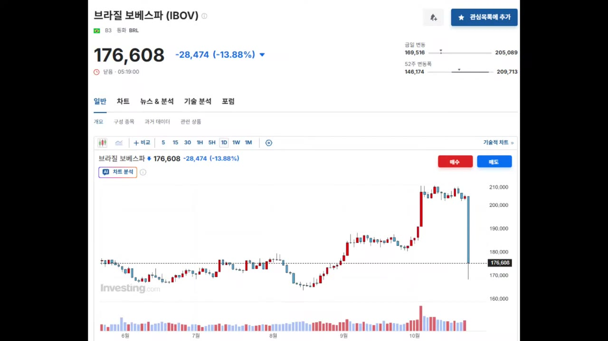
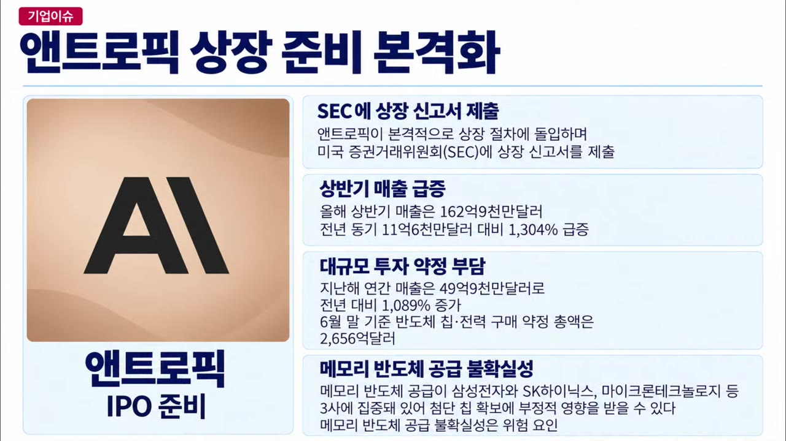
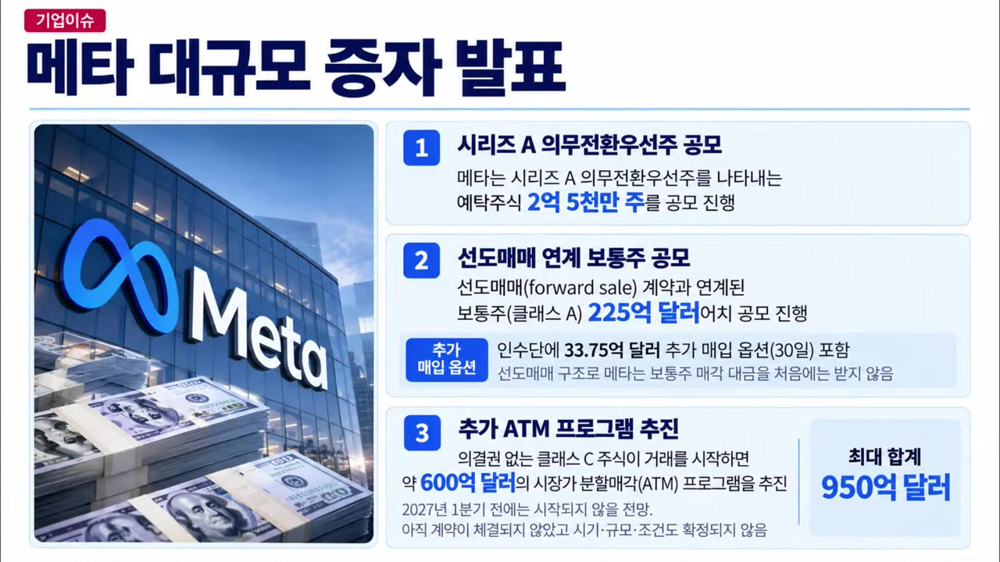
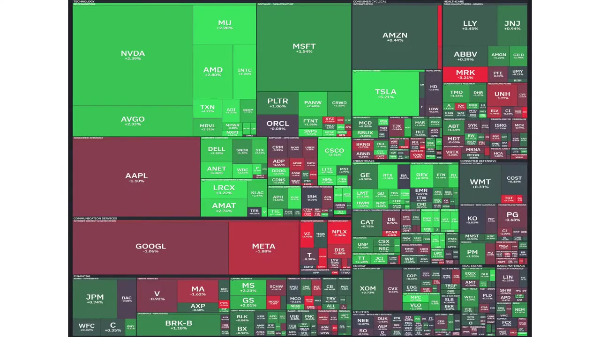

[10월 27일 화요일 미국시황] 브라질 통화 가치 폭락! 앤트로픽 상장 신고서 제출 결과는?
▶ 원본 영상 보기한눈에 보기
- 브라질 대선에서 시장 예상(폴리마켓 79%)과 달리 룰라 대통령이 재선되자, 보베스파 지수가 하루 14% 떨어지고 헤알화가 폭락했으며 10년물 금리는 230bp 뛰었다.
- 앤트로픽이 미국 SEC에 상장 신고서를 냈다. 위험 요인으로 "메모리 공급이 삼성전자·SK하이닉스·마이크론 3사에 몰려 있다"고 적었고, 강사는 단기적으로 한국에 유리한 뉴스로 본다.
- 신고서에 따르면 앤트로픽의 상반기 매출은 약 163억 달러로 전년 동기보다 13배 늘었다. 반면 xAI(스페이스X)와 맺은 컴퓨팅 임차 계약은 최대 1,205억 달러(자막상)에 이른다.
- 메타는 의무전환우선주와 의결권 없는 주식으로 950억 달러를 조달한다. 강사는 상장과 증자로 주식 공급이 너무 많아 2027년 미국 시장을 긍정적으로 보기 매우 어렵다고 주장한다.
- 한국 거래대금이 23조 원으로 2025년 9월 이후 가장 적었다. 강사는 이를 바닥이 가까워졌다는 신호로 본다.
이런 분께 도움이 됩니다
- 브라질 국채와 헤알화에 투자했거나 투자를 검토하는 분
- 앤트로픽 상장 신고서에서 AI 인프라와 메모리 반도체 관련 숫자만 빠르게 확인하고 싶은 분
- 2027년 미국 증시의 수급(공급 과잉) 위험을 점검하려는 분
핵심 내용
브라질 금융 쇼크: 룰라 재선
- 폴리마켓에서는 보우소나루 측 후보 당선 확률이 79%, 룰라 측은 21%였다. 실제로는 근소한 차이로 룰라 대통령이 재선됐고, 시장은 전혀 예상하지 못했다. (2:08)
- 하루 동안 시장이 이렇게 움직였다.
- 보베스파(브라질 주가지수): 하루 -14%. 보우소나루 측 당선을 기대하고 올랐던 몫보다 더 많이 빠졌다.
- 달러 대비 헤알화: 약 8.6% 폭락(자막상 수치가 조금 불분명).
- 브라질 10년물 국채 금리: +230bp(2.3%p) 급등. (3:21)
- 시장은 공약을 이행하는 데 내년 재정 부담이 820억 헤알(약 20조 원) 늘 수 있다는 보도에 반응했다. 시장은 정부가 돈을 벌어서가 아니라 돈을 찍어서 나눠 줄 것이라고 우려한다.
- 원화 대비 헤알화는 245원이고, 장중에는 236원 근처까지 떨어졌다. (1:18)
- 강사는 220~240원이면 브라질 국채가 매수 가시권에 들어온다고 본다. 150원까지 빠질지는 모르겠다고 했다.
- 강사는 전에 270원에 팔았는데, 이후 300원을 넘어 당황했다고 밝혔다.
💡 시장이 확신했던 선거 결과가 뒤집히자 주식·통화·채권이 하루에 함께 무너졌다.

앤트로픽 상장 신고서: 메모리 공급 위험
- 앤트로픽이 미국 SEC에 IPO(기업공개) 상장 신고서를 냈다. 신고서는 위험 요인으로 "메모리 반도체 공급이 삼성전자·SK하이닉스·마이크론 3사에 집중돼 첨단 칩 확보에 부정적 영향을 받을 수 있다"고 적었다. (9:50)
- 강사는 이 3사를 짚었다는 것은 SSD가 아니라 D램과 HBM(고대역폭 메모리)이 부족하다는 뜻이라고 본다. 단기적으로는 한국에 매우 유리한 뉴스라는 해석이다.
- 강사는 미국의 공급 확대 요구를 경계한다.
- 일론 머스크가 메모리 업체를 비판한 발언에 강하게 반발했다. "테슬라를 더 사지 않겠다"는 개인 의견도 밝혔다.
- 강사에 따르면 2023년에 메모리를 7달러에 사 줬어야 하는데 5달러에 사 가는 바람에 메모리 업체가 적자를 내고 투자를 멈췄다. 그래서 지금 공급이 부족하다는 주장이다.

앤트로픽 실적과 "지금 상장해야 하는 이유"
- 올해 상반기 매출은 162억 9천만 달러(약 163억 달러)다. 전년 동기 11억 6천만 달러보다 약 13배 늘었다. (12:19)
- 지난해 연간 매출은 약 46억 달러다.
- 상반기 매출만으로 지난해의 약 4배다. 하반기에 더 늘면 연간으로 약 8배가 된다(강사 추정).
- 강사는 내년 성장률이 4~5배로 줄 것으로 보고, 그래서 성장률이 가장 높은 지금 상장해야 한다고 해석한다. (13:05)
- 강사는 신고서에 거짓을 쓰면 큰 처벌을 받는 미국 제도를 언급했다. 한국도 상장 심사 때 분할 상장·자회사 상장 계획을 적게 하고, 어기면 상장 폐지 같은 강한 벌칙을 줘야 한다고 주장했다.
신고서로 드러난 xAI(스페이스X) 데이터센터 계약
- 앤트로픽은 2026년 5~10월(자막상 "2020년", 문맥상 2026년)에 스페이스X의 xAI와 컴퓨팅 임차 계약을 맺었다. 2029년까지 최대 1,205억 달러를 쓰는 규모다(뒤에서는 "1,05억"이라고도 말해 자막상 불분명). (13:29)
- 양쪽 모두 90일 전에 통지하면 계약을 해제할 수 있다.
- 5월 6일 첫 계약은 콜로서스 1(Colossus 1, xAI의 데이터센터) 전체를 월 12.5억 달러(약 1.5조 원)에 쓰는 조건이다. 규모는 GPU 22만 개, 300MW.
- 구글도 자체 데이터센터가 모자라 xAI와 계약했다. 2026년 10월부터 2029년 6월까지 월 9.2억 달러에 GPU 약 11만 개 분량을 쓴다. (16:21)
- 두 계약을 합치면 xAI는 월 약 30억 달러, 연 약 360억 달러를 번다(강사 계산).
- 스페이스X의 지난 분기 매출은 146억 달러다(강사가 176억이라고 했다가 정정). 강사는 이 중 절반인 약 70억 달러가 AI 데이터센터에서 나와 흑자로 돌아섰다고 설명한다.
- 자막상으로는 강사가 앤트로픽이 지금 xAI에 내는 돈을 월 약 20억 달러로 계산했다. 실제 매출 규모와 비교하면 강사는 지출이 매출보다 많다고 판단한다. 그래서 상장 후 투자자들이 이를 어떻게 볼지가 매우 중요하다고 강조한다.
- 강사는 GPU가 감가상각 기간이 끝나도 계속 돌아간다고 강조한다. 5~6년 전에 나온 GPU도 아직 쓰이고, 메타가 서버 사용 연한을 3년에서 6년으로 바꾼 것도 이 때문이라는 설명이다. (18:27)
- 스페이스X는 더 짓기 위해 상장해 자금을 조달했다. 사모 자산운용사 아폴로(Apollo)와 400억 달러 규모의 마스터 금융 리스를 맺어 엔비디아 GPU를 사들이는 구조다.
- 강사에 따르면 콜로서스의 큰 고객은 빅테크보다 앤트로픽과 오픈AI다. 두 회사가 구글보다 두 배를 더 썼다.
💡 AI 데이터센터 임대는 "때돈 버는 사업"이다. 하지만 그 돈을 내는 AI 회사들은 계속 자금을 끌어와야 하는 구조다.
메타 950억 달러 조달과 유상증자에 대한 시각
- 메타의 공모 내용은 다음과 같다. (21:08)
- 의무전환우선주(정해진 시점에 보통주로 반드시 바뀌는 우선주) 2억 5천만 주, 약 350억 달러
- 의결권 없는 클래스 C 주식 약 600억 달러
- 합계 약 950억 달러. 채권으로도 1천억 달러대를 조달하고 있다.
- 강사는 건전한 회사라면 유상증자를 최후의 수단으로 쓴다고 본다. 먼저 회사 신용(대출·채권)으로 조달하고, 유상증자는 이자 부담이 없는 대신 주주와 위험을 나누는 것이라는 설명이다.
- 미국 기업은 의무전환우선주처럼 보통주보다 배당을 훨씬 많이 주는 형태로 증자해 "예의가 있다"고 평가했다.
- 한국 기업에 대한 주장은 이렇다. 유상증자를 하려면 사업 성과로 보답을 약속하거나, 그동안 배당을 충분히 해 왔어야 한다. 증자하는 회사가 호화롭게 지내서도 안 된다며 "염치가 있어야 한다"고 했다. (23:11)
- SK하이닉스의 솔리다임 상장이 "일단 실패(잠시 후퇴)"한 것을 주주 감시가 강해진 사례로 들었다. 강사는 앞으로 기업들이 주주 눈치를 볼 것이라고 본다.

2027년 미국 시장 전망 (강사 의견)
- 강사는 2027년 미국 시장을 긍정적으로 보기 매우 어렵다고 말한다. 2008년 이후 매년 평균 10% 이상 오른 흐름이 이어진다고 장담할 수 없다는 것이다. (20:02)
- 근거는 상장·증자로 늘어난 주식 공급이다. 닷컴 버블 이후 처음 보는 수준이고, 금융시장은 공급이 많아지면 보통 꺾인다는 주장이다.
미국·해외 시장 지표 (10/26 미국장)
- 앤트로픽 상장 소식에 투자 심리가 살아나 기술주 중심으로 올랐다. (10:51)
| 항목 | 움직임 |
|---|---|
| 반도체 지수 | +2.82% (그동안 하락 후 반등) |
| 나스닥 | +0.8% |
| S&P 500 | +0.7% |
| 다우 | +0.2% |
| 메타·구글·애플 | 하락 |
| 원유 | 하락 (두바이유는 상승. 강사가 처음에 잘못 봤다고 정정) |
| 가솔린 | 크게 하락 |
| 비트코인 | 하락 |
| 미 10년물 금리 | 4%대 유지. 30년물 등 장기물 소폭 하락 |
| 달러 | 소폭 상승, 102 수준으로 복귀(자막상) |
| 원화 | 약세 지속(환율 고공행진) |
- 네오클라우드(GPU 임대 전문 클라우드) 기업들은 소폭 반등했지만, 그동안 떨어진 폭에 비하면 약하다. 강사는 아직 확신하기 어렵다는 입장이다. (26:18)
- 중국 국채의 WGBI(세계국채지수) 비중이 11.9%로 세계 2위에 올랐다. 외국인 수요가 늘고 있다.
- 테슬라는 바클레이스로부터 '비중확대' 의견을 받아 크게 올랐다.

한국 시장: 거래대금 바닥 신호
- 어제 한국 거래소 거래대금은 23조 원으로, 2025년 9월 이후 가장 적었다. (27:07)
- 강사는 이를 "굉장히 좋은 뉴스"로 해석한다. 과거에도 거래량이 바닥이면 주가도 바닥일 확률이 매우 높았다는 주장이다.
강사가 걱정하는 시나리오: 일본 버블의 교훈
- 강사의 전망은 이렇다. 한국이 지금 예상대로 돈을 벌면 내년 무역수지가 중국과 함께 세계 최상위가 된다. 그러면 1980~90년대 일본처럼 미국의 압박을 받을 수 있다.
- 1990년에는 세계 시가총액 상위 기업 가운데 일본 기업(은행 등)이 대부분이었다. 미국 기업은 "간간이" 있었다.
🔁 강사가 설명한 일본 버블 형성과 붕괴 과정
- 엔화 절상 압박
- 수출 경쟁력 하락
- 금리 대폭 인하
- 부동산·주식 투기
- 잃어버린 30년
- 1엔화 절상 압박
미국이 플라자 합의로 엔화 가치를 약 2배로 올리게 했다(240엔 → 120엔).
- 2수출 경쟁력 하락
자동차 값이 1년 만에 두 배가 돼 수출이 어려워질 것을 걱정했다.
- 3금리 대폭 인하
경기를 살리려고 금리를 크게 내리고 돈을 많이 풀었다.
- 4부동산·주식 투기
기업까지 빌딩을 담보로 돈을 빌려 다시 빌딩을 사는 일을 되풀이했다. 강사는 이를 "나라 전체의 서브프라임"이라고 표현했다.
- 5잃어버린 30년
거품이 꺼지며 장기 침체에 빠졌다. 강사는 재테크 열풍으로 성실하게 일하는 정신이 무너졌다는 일본 작가의 시각도 소개했다.
기억할 숫자·인용
| 항목 | 숫자 |
|---|---|
| 폴리마켓 브라질 대선 예측 | 보우소나루 측 79% vs 룰라 측 21% |
| 보베스파 하루 하락 | -14% |
| 브라질 10년물 금리 | +230bp |
| 브라질 공약 이행 추가 재정 부담 | 820억 헤알(약 20조 원) |
| 원화 대비 헤알화 | 245원 (장중 236원) |
| 앤트로픽 상반기 매출 | 162.9억 달러 (전년 동기 11.6억 달러, 약 13배) |
| 앤트로픽 지난해 연간 매출 | 약 46억 달러 |
| 앤트로픽 ↔ xAI 계약 | 최대 1,205억 달러(자막상), 2029년까지 |
| 콜로서스 1 임차료 | 월 12.5억 달러, GPU 22만 개, 300MW |
| 구글 ↔ xAI 계약 | 월 9.2억 달러, GPU 약 11만 개, 2026.10~2029.6 |
| 스페이스X–아폴로 금융 리스 | 400억 달러 |
| 메타 자금 조달 | 우선주 350억 + 클래스 C 600억 = 950억 달러 |
| 중국 국채 WGBI 비중 | 11.9% (세계 2위) |
| 한국 거래대금 | 23조 원 (2025년 9월 이후 최저) |
- "유상증자는 최후의 수단 중 하나예요."
- "과거에도 거래량이 바닥이면 주가도 바닥일 확률이 매우 높았습니다."
생각해볼 점
- 숫자 확인 필요: 자동 자막이라 xAI 계약 총액(1,205억 vs 1,05억 달러), 헤알화 하락률, 앤트로픽의 월 지출 계산이 엇갈린다. 투자 판단에 쓰려면 앤트로픽 S-1 원문과 관련 보도로 직접 확인해야 한다.
- "지출이 매출보다 많다"는 계산(강사 의견): 최대 계약액은 여러 해에 걸친 상한이고 90일 통지로 해제할 수도 있다. 그래서 월 지출을 단순히 계산해 매출과 비교하는 것은 과장일 수 있다.
- 바닥 신호와 공급 과잉 전망은 강사의 경험적 주장이다: 거래대금 감소가 바닥을 뜻한다는 해석, 공급 과잉으로 2027년 미국 시장이 어렵다는 전망 모두 통계로 검증된 결론이 아니다. 테슬라 불매 같은 발언은 개인 감정이 섞인 의견으로 구분해서 들어야 한다.
바로 해볼 일
- 브라질 국채를 갖고 있다면 헤알화 환율(원화 대비 220~240원 구간)과 브라질 10년물 금리 추이를 확인하기
- 앤트로픽 S-1의 '위험 요인(Risk Factors)'에서 메모리 공급 관련 문구를 직접 찾아 읽기
- 한국 거래소 일별 거래대금을 며칠간 기록해, 23조 원 수준이 이어지는지 추세 확인하기